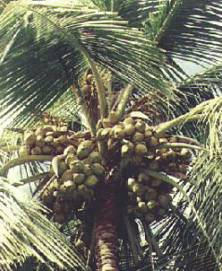

HORT 282 :: Lecture 14 :: COCONUT

COCONUT
(Cocus nucifera, Palmae)
The coconut palm, Cocus nucifera L., is one of the most beautiful and useful palms in the world. It provides a variety of useful products like food, fuel and timber. Every part of the tree is being utilized for some purpose or other and hence, it is called Kalpavriksha meaning tree of heaven which provides all the necessities of life. It is grown in India in about 1.51 million ha. With an annual production of about 9283.4 million nuts. It ranks third in world in area and production, first and second being Indonesia and Philippines respectively. Among the different coconut growing states in India, Kerala, Tamilnadu, Karnataka and Andhra Pradesh account for nearly 90persent in area and production.
Name of the State |
Share in area (%) |
Share in production of nuts (%) |
Kerala |
57.74 |
49.28 |
Tamilnadu |
12.80 |
23.63 |
Karnataka |
16.24 |
14.68 |
Andhra Pradesh |
3.94 |
2.82 |
Other states (Orissa, Maharastra, Assam, West Bengal, Goa, Daman, Andaman, Pondichery, Tirupura etc.,) 9.28 (%), 9.59 (%) |
||
Among the Southern States though Tamil Nadu has share in area (92, 14,200 ha), its share in production is due to the higher productivity per palm.
Botany
Origin of coconut is believed to be somewhere in South East Asia. Coconut, botanically Cocas nucifera has only one species under the genus Cocus. It is a tall stately unbranched palm growing to a height of 12m to 24m. The stem is marked by rings of leaf scars which are often not prominent at the base. The palm has an adventitious root system, having numerous thick roots from the base of the stem almost throughout its life. The roots are localized generally at the lower most region of the stem which has been termed the bole. Leaves are large, long, pinnately sect, borne on the crown. The palm is monoecious with relatively few female flowers. Male flowers are numerous small with six stamens and in female flowers, the ovary is tricarpic, usually one ovuled.
Fruit is large, one seed drupe. The outer layers of the pericarp are thick and fibrous. The inner layer (endocarp of shell) is very hard, horny or stony and the thin testa cohering to the endocarp is lined with white albuminous endosperm (meat), enclosing a large cavity, partially filled with sweet fluid. The inflorescence develops within a strong, tough pointed double sheath called spathe which after full developed splits along its underside from top to bottom and releases the inflorescence. This usually occurs from 75-95 days after the first appearance of its tip in the leaf axil. The primordial of the inflorescence begin to form the leaf axil about 32 months before the opening of the spathe. In bearing coconut palm every leaf axil can produce a spadix and under normal conditions it varies from 12-15 per annum. However, this number may be reduced due to adverse weather condition.
In India, the female flower production is high during the period from March- May and low from September – January. In general, the number of female per inflorescence varies from 10-50. Female flowers normally become receptive 19-20 days after the opening of the spathe. Genetically the dwarf palms are autogamous while tall types allogamous. Both winds and insects are considered to be the main pollinating agents. A large number of buttons (female flowers) fail to develop due to lack of pollination and fertilization, defect in the flowers, physiological disorders, genetic nature of the variety, pests and disease and unfavorable environment etc. Generally, not more than 2 to 40% of the female flowers reach maturity under normal conditions.
Climate and soil
The coconut palm is found to grow under varying climate and soil condition. It is essentially a tropical plant, growing mostly between 20 N and 20 S latitudes. Near the equator, productive coconut plantation can be established up to the elevation of about 1000m from sea level while the further one goes from the equator, the more is the palm confined to lowlands. The palms tolerate wide range in intensity and distribution of rainfall. However a rainfall of about 200cm per year and well distributed throughout the year is the best proper growth and maximum yield. In areas of inadequate rainfall with uneven distribution, irrigation is required. Soil moisture deficit during summer hampers nut production to greater extent. Palm requires plenty of sunlight and odes not grow well under shade. Coconut is adaptable to a wide range of soil conditions, from light sandy soils to heaviest clays with a pH ranging from 5.2 to 8.0. Best soils are deep, friable, loamy soils. In heavier soils, it requires good drainage.
Cultivars and Hybrids
Coconut palms are broadly classified into two groups, the tall and dwarf. The tall cultivars are the common type that occurs throughout the world. The different cultivars of the Tall are known by the place where they are largely cultivated. The tall cultivars largely grown in India are the West Coast Tall and East Coast Tall.
The dwarf varieties are shorter in stature and life span as compared to Talls. They start bearing earlier compared to Talls. The size of the nuts and the quality of copra are inferior to Talls. The Dwarf cultivars occur with three nut colours viz. green, yellow, and orange. The dwarf cultivars are generally grown for tender nuts and also for hybrid production. The common dwarfs available in India are Chawghat Orange Dwarf, Chawghat Green Dwarf, Malayan Green Dwarf, Malayan Yellow Dwarf, Malayan Orange Dwarf, Gangabondam etc.
The hybrids between Tall and Dwarf forms (TxD) or vice Versa (DxT) show hybrid vigour for growth, earliness and yield. Hence, hybrids have been released recently for cultivation. The important cultivars and hybrids recommended now for cultivation are given below:
TALLS
West Coast Tall (WCT): It is a common tall cultivar, cultivated through out the West Coast region because of its commercial importance, high copra yield (115 to 180 g /nut) and high quality in terms of high oil content (70 to 72%). WCT is a hardy palm, yields economically ranging from 50 to 100 nuts /palm /year (mean of 70 nuts under rainfed condition) for about 60 to75 years. It is one of the best indigenous types grown from very ancient times in India. The nuts are varying in shape, medium in size with colour varying from green, yellow to brown; varying in husk and kernel content also. This cultivar commences to yield in about 6 to 8 years after planting under favourable conditions. The mean yield of nuts is positively correlated with both annual outturn of copra and oil; whereas it is negatively correlated with mean copra content per nut.
East Coast Tall (ECT): It is a common tall cultivar. The time taken for flowering is 72.9 months. ECT is a hardy palm, yields economically ranging from 73 nuts /palm /year. The average weight of copra is around 125g.The oil content is around 64%.
Laccadive Ordinary (Chandrakalpa): It is a native of Lakshadweep, similar to West Coast Tall in almost all characters, except for the prominent ridges on the triangular nuts and the average yield is comparatively high, 120 nuts /palm /year (range 90 to 180). This type is recommended for commercial cultivation in the country because of high quantity and quality of copra production. About 6200 nuts are required to make one tone of copra. The performance of Laccadive Ordinary has been found to be good in most of the coconut growing states in India; it gave the highest yield of copra /palm at Pilicode (Kerala) and Arsikere (Karnataka); while it gave maximum number of nuts /palm at Ratnagiri (Maharastra) and Ambajipeta (Andhra Pradesh) research stations.
HYBRIDS
Chandra Sankara: Chawghat Orange Dwarf X West Coast Tall, It is a hybrid. The time taken for flowering is 60 months. On an average a tree of this hybrid can yield 116 nuts/palm/year. The average weight of copra is 215g and oil content is around 68%.
ChandraLaksha: Laccadive Ordinary X Chawghat Orange Dwarf: It is a hybrid. The time taken for flowering is 48 months. On an average a tree of this hybrid can yield 109 nuts/palm/year. The average weight of copra is 195g and oil content is around 69%.
Laksha Ganga: Laccadive Ordinary X Gangabondam: It is a hybrid. The time taken for flowering is 60 months. On an average a tree of this hybrid can yield 108 nuts/palm/year. The average weight of copra is 195g and oil content is around 70%.
Keraganga: West Coast Tall x Gangabondam: Five years for flowering, 100 nuts per tree, 201g copra, 69% oil content.
Anantha ganga: Andaman Ordinary X Gangabondam: Five years for flowering, 95 nuts per tree, 216g copra, 68% oil content.
Varieties released by TNAU, Coconut Research Center – Veppankulam
From this research institute till now one Tall variety (VPM), and three hybrid varieties have been released.
VPM –3: This is a Tall variety. In Tamil Nadu it is suitable for cultivation in rain fed areas. It will start to bear in 5-7 years after planting. On an average a tree of this variety can yield 90 nuts/palm/year. The nuts are larger in size. The average weight of copra is around 176g. It can tolerate drought and can yield higher.
VHC –1: This is the cross between East Coast Tall and Chawghat Green Dwarf variety and was released in 1982. It is a hybrid variety. On an average it can yield 115 nuts/palm/year. The average weight of copra is around 142g. It contains 69% oil.
VHC –2: It is the cross between East Coast Tall and Malayan Yellow Dwarf and was released in 1988. It is a hybrid. On an average a tree is around 142 nuts/palm/year. The average weight of copra is 146g and oil content is around 70%.
VHC-3: It is the cross between East Coast Tall and Malayan Orange Dwarf, and was released in 2000. It is a hybrid. On an average a tree is around 156 nuts/palm/year. The average weight of copra is 162g and oil content is 70.2%.
ALR-1: High yielding tall type, One year earlier flowering compared to WCT, ECT and VPM3, tolerant to drought, 7645 nut gives one tone copra, moderately tolerant to major coconut pest.
Production of Coconut Seedlings
Since coconut cultivation involves substantial pre-bearing investment, greater emphasis must be given for the selection of the right type of planting material. Quality seed nuts and seedlings are obtained through a series of selections made at various stages.
1. Selection of seed gardens
- The garden should have palms with record consistently high yields and high proportion of heavy bearers.
- They should not be located under favourable environment.
- They should be free from disease and pests.
2. Selection of mother plants
In order to raise coconut seedlings of superior quality, the selection of mother palm should be done prior to taking seed nuts. The following points may be taken into case of while selecting mother palms.
- The palm should be strong, stout and growing straight.
- Leaf scars on the palms should be closely spaced.
- The palms should be regular bearer with annual yield of more than 80 nuts and copra contents not less than 150 g per nut.
- Palms should have reached full bearing stage and have been giving consistently high yields for atleast four years.
- Palms of above 60 years should be avoided.
- Palms should have atleast 30 fully opened leaves on the crown
- The leaves should have short strong petioles with wide leaf base firmly attached to the stem. Their arrangement should provide support to the bunches.
- Each leaf axil should have one inflorescence with large number of spikes and one or two female flowers per spike.
- Bunch stalk should be short stout and strong.
- Palms should have medium sized nuts (about 1200 g dry weight / nut) with round and oblong shape. Husked be large (about 570 g) with thick kernels.
- Palms, which produce barren nuts or those shedding large number of nuts in the immature stage, should be discarded.

3. Selection of seed nut
For raising seedlings, it is important to collect seed nuts of high quality from the selected mother palms. The selected nuts can be stored under dry and cool places for about 3-4 months without deteriorating their viability. The following points should be considered while selecting seed nuts.
- Collect seed nuts from February - May
- Harvest only fully matured nuts (11-12 months old)
- Nuts should not be damaged while harvesting
- Discard the nuts having irregular shape, size and improper development
- Select seed nuts of uniform size with thin husk weighing above 100 g.
- Selected seed nuts should float on water vertically. The content of copra should be more than 150 g.
4. Raising of seedlings
- Select site with well drained coarse textured soil near dependable water source
- Prepare the raised beds to avoid of water stagnation during rainy season
- Sandy soil is the best for raising seedlings on large scale
- If the soil is not sandy, treat the soil with lidane as a precaution against white grub and termites. Nursery can be raised either in open with artificial shade or in gardens where the trees are tall and the ground is not completely shaded.
- The seed nuts should be sown in long and narrow beds at a spacing of 40 x 30 cm during May-June in 20-25 cm deep trenches. However the length and width of nursery beds should be kept as per ones convenience.
- The seed nuts with less nut water and seed nuts of dwarf cultivars may be sown horizontally to ensure early germination. Discard nuts in which water has dried.
- Before sowing it is advisable to dip seed nuts in suspension of Lindane (400 g in 100 litres of water) as an additional precaution against white grub and termites.
5. Care and Management of nursery
- Regular watering to be done after rainy season
- Mulching and shading should be done after rainy season
- Keep nursery free of weeds
- Conduct regular surveillance for any incidence of pests and diseases
6. Selection of seedlings
Prior to transplanting selection of seedlings is utmost important. The following points will help in selection of superior quality seedlings
- Select early germinated seedlings
- Select seedlings which show early splitting, short petiole and broad leaves
- Select seedlings which are ready for transplanting in 9-12 months
- Select seedlings with well developed root system
- Select seedlings having thick and short collar region
Preparation of land and planting:
The depth of pits will depend upon the soil type. Normally a pit size of 1.0 X 1.0 X 1.0 m is dug and filled up to 50 cm depth with sand and powdered cow dung. However, when the water table is high, planting at the surface or even on mounds may be necessary but digging pits and filling has to be done.
System of planting
Spacing of palms requires careful consideration.
|
Planting system |
Spacing |
1 |
Triangular |
7.6m |
2 |
Square |
7.6x7.6m, 8x8m, 9x9 m |
3 |
Single Hedge |
6.5m in rows - 9m between rows |
4 |
Double Hedge |
6.5 to 6.5m in rows - 9m between pairs of rows |
In well-drained soil, seedlings can be transplanted with the beginning of south-west monsoon. If irrigated facilities are available, it is advisable to take up planting at least a month before the monsoon sets in so that the seedling get well established before the onset of heavy rains.
Care of young palms
Young palms require good care in the early of growth. The transplanted seedling should be shaded and irrigated properly especially during the summer months. Provision of proper drainage is also equally important in areas subject to water logging. The pits should be cleared of weeds periodically. Soil washed down by the rains and covering the collar of the seedlings should also be removed. The pits should be gradually filled up as the seedlings grow.
Manuring
As coconut yields throughout the year it takes heavy amount of nutrients from soil especially N, K and Cl. Therefore, regular Manuring from the first year of planting is essential to ensure good vegetative growth, early flowering and bearing and high yields. The fertilizer requirements of different coconut growing states are given below:
|
Doses (g) /Palm |
||||
FYM (kg) |
N |
P2O5 |
K2O |
MgO |
|
Kerala-General |
50 |
500 |
320 |
1200 |
- |
Kerala-Root wilt areas |
50 |
500 |
500 |
1000 |
500 |
Karnataka |
50 |
680 |
450 |
900 |
- |
Maharastra |
50 |
750 |
225 |
900 |
- |
Tamil Nadu |
50 |
560 |
320 |
1200 |
- |
The first application of fertilizers should be done three months after planting (nearly 1/10th above dose) while during the second year, one- third of the dosage recommended for adult palm may be applied in two splits doses and during the third year, 2/3 of the dosages recommended for adult palm may be applied and from the fourth year onwards, the full dose recommended may be applied. After the receipt of summer showers, 1/3 of the recommended dose of fertilizers for a year may be spread around the palms within a radius of 1.8 m and forked in. the remaining 2/3 of recommended dose of fertilizer may be spread over 50 kg of the green leaf or compost per palm in circular basins of 1.8 m radius and 25 cm depth during September / October and the basins covered.
Irrigation and soil moisture conservation
The coconut palm responds to summer irrigation. Production of female flowers and setting percentage increases considerably due to irrigation. Since spadix initiation to ripening of nuts takes nearly 42 months, the full benefit of irrigation can be felt only after three years. Under West Coast conditions, 2 cm irrigation once in 4-5 days during December to May is beneficial in sandy loam soils. In areas where water is scare, drip irrigation system can be adopted. This requires only 30 liters of water per day per palm is against 200 liters per palm in conventional irrigation.
Burying the coconut husk or coir dust is one of the most effective ways of conserving soil moisture. These husks are coir dust can act as sponge and absorb and retain moisture about six and times respectively to their own weight and slowly release to the coconut periods during dry periods. As the husk or dust breaks down slowly, their effect will last for 4 to 6 years and 8 to 10 years respectively. On decomposition they also add K to soil. These husks and dusts can be add in pits or trenches taken in between the trees but in all the cases the depth should be 0.6 m and 1.8 m away from the bole. Husks or dusts can be added in alternate layers with soil.
Intercultivation
Regular Intercultivation is very essential to step up and maintain the production at a high level. Tillage operations like digging the garden with spade, ploughing, forming small mounds before the end of monsoon and making shallow basins with a radius of about 2 m at the beginning of monsoon and filling up at the close of monsoon are beneficial to the trees. Method of Intercultivation will depend upon local conditions, availability of labour, size of holding, soil type, topography and distribution of rainfall. Cover cropping is recommended where inter and mixed cropping is followed to prevent soil erosion in coconut gardens. Leguminous crops such as Mimosa invisa, Stylosanthes gracilis and Calapogonium mucunoides are generally recommended. Green manure crops like sun hemp (Crotalaria juncea) and Kolinji (Tephrosia purpurea) are also raised and ploughing in during Aug-Sep. These crops can be sown in APRIL- MAY when pre-monsoon showers are received.
Inter and mixed cropping
In pure coconut garden when palms are spacing at 7.5 x 7.5 as much as 75% of the available area is not effective utilized. Besides, a pure coconut grooves utilize only half of the available light. Hence, a variety of intercrops like pineapple, banana, groundnut, chillies, sweet potato and tapioca can be raised in coconut gardens after the palm attaining the height of 5-6 m. In older plantations cocoa, pepper, cinnamon, clove and nutmeg can be grown as mixed crop. in places where rainfall is not well distributed, irrigation may be necessary during summer months.
However, these crops are to be adequately, separately manured in addition to the manures applied to the coconut palm. Mixed farming by raising fodder grasses such as hybrid Napier grass, guinea grass along with leguminous fodder crops such as Stylosanthes grasilis. Coconut gardens can support 4 –5 dairy animals. The cattle manure generated from the system when applied to coconut gardens improves the soil fertility considerably.
Pest management
Rhinoceros beetle (Oryctes rhinoceros)
Symptoms
The adult beetle bores into the unopened fronds and spathes. The attacked frond when fully opened shows characteristic triangular cuts.
Control
1. Provide field sanitation to prevent breeding of beetles.
2. Hook out the beetles from the attacked palms by using beetle hook.
3 The topmost three leaf axils around the spindle may be filled with any of the following mixtures as a prophylactic measure:
(a) Sevidol 8G 25 g + fine sand 200 g, which is to be done thrice in a year in April-May, September-October and December-January. (b) Naphthalene balls 10.5 g (approx. three balls) covered with fine sand, once in 45 days.
4. Treat manure pits and other possible breeding sites with 0.01% carbaryl on w/w basis. Treatment will have to be repeated every three months.
5. Release Baculovirus oryctes infected adults @ of 10-15 / ha to bring down the pest population.
6. Inoculation of breeding sites with entomopathogenic fungus Metarrhizium anisopliae (@ 5 x 1011 spores / ml) gives effective control.
Red palm weevil (Rhyncophorus ferrugineus)
Symptoms
The diagnostic symptoms are the presence of holes on the stem, oozing out of a viscous brown fluid and extrusion of chewed up fibrous matter through the hole, longitudinal splitting of leaf base and wilting of central shoot. Sometimes the gnawing sound produced by the feeding grubs inside will also be audible.
Control
1. Field sanitation should be given prime importance.
2. Avoid making steps or any other injury on the tree trunks to reduce the loci of infestation.
3. Leaf axil filling as suggested in the case of rhinoceros beetle will be useful against the red palm weevil also.
4. When green leaves are cut from the palms, stumps of not less than 120 cm may be left on the trees in order to prevent successful inward movement of the grubs through the cut end.
5. In attacked palms, observe for the bore- holes and seal them except the top most one. Through the top most hole, pour 1% carbaryl or 0.2% trichlorphon or 0.1% endosulfan suspension @ one litre per palm, using a funnel.
6. When the pest infestation is through the crown, clean the crown and slowly pour the insecticidal suspension.
7. As an alternative, apply 1% DDVP or aluminum phosphide (for limited use only) one or two tablets per palm as a curative measure.
8. Coconut log traps with fermenting toddy or pineapple or sugarcane activated with yeast or molasses can be set in coconut plantation to attract and trap the free floating population of red palm weevil. Incorporate any of the insecticide to each trap to kill the weevils trapped.
9. Use of pheromone trap for attracting and killing adult weevils @ one trap per 2 ha.
Leaf eating/black headed caterpillar (Opisina arenosella)

Symptoms
The caterpillar feeds on green matter from the lower leaf surface, remaining within galleries of silk and frass. The attack will be severe during summer months from January-May.
Control
1. As a prophylactic measure, the first affected leaves may be cut and burnt during the beginning of the summer season.
2. Arrange for the release of larval / pupal parasitoids, Goniozus nephantidis, Elasmus nephantidis (brown species) and Brachymeria nosatoi.
3. When infestation is very severe and if the biocontrol is not likely to be effective, sprays the undersurface of the fronds with dichlorvos 0.02%, Malathion 0.05%, quinalphos 0.05%, endosulfan 0.05% or phosalone 0.05%.
Note: Application of the insecticides should be followed by liberation of larval and pupal parasites from the 21st day.
Cockchafer beetle (Leucopholis coneophora)
Symptoms
The soil inhabiting white grubs cause damage to the roots of coconut palm. The attack is common in sandy tracts. The infested palms turn pale yellow and there will be considerable reduction in yield.
Control
1. Collection and destruction of adults during the monsoon period from adjacent vegetation (in the evening).
2. Plough or dig the infested soil synchronizing with pre-monsoon showers.
3. Treat the soil with phorate 10G @ 100 g/palm or drench with chloropyriphos 0.04% suspension. The treatment should be given twice, first during April-May after the receipt of pre-monsoon showers and second during the month of September.
Note: Wherever possible, light traps may be set up to attract and trap adult beetles.
Coried bug (Paradasynus rostratus)
Symptoms
The attacked buttons become deformed with characteristic crevices on the husk below the perianth with gum exudations and the tender nuts become barren.
Control
Apply 0.1% carbaryl or endosulfan suspension on the newly opened inflorescence after the receptive phase of the female flowers and spray the entire crown excluding the leaves and older bunches.
Note: The insecticide may be applied according to the severity of infection in a need-based manner.
Coconut eriophyid mite (Aceria [Eriophyes] guerreronis)
Coconut eriophyid mite, a recently introduced pest is spreading at an alarming rate in Kerala. It is a microscopic worm like mite infesting young buttons colonizing under the perianth.
Symptoms
The earliest symptom on 2-3 month old buttons is pale yellow triangular patches seen below the perianth. Later, these patches become brown. Severely affected buttons may fall. As the buttons grow, brown patches lead to black necrotic lesions with longitudinal fissures on the husk. Uneven growth results in distortion and stunting of nuts leading to reduction in copra yield. In severe cases, the losses are compounded because the quality of fibre is reduced and distorted nuts increase the labour requirements for dehusking.
Management
1. Collect and destroy all the fallen buttons of the affected palm.
2. Apply 2% Neem oil + garlic emulsion or commercial Neem formulation azardirachtin 0.004% (Neemazal T/S 1% @ 4 ml per litre of water) or micronized wettable sulphur 0.4 % in the crown on young bunches. In large coconut plantations, dicofol 0.1% can be applied after taking adequate precautions. However, spraying of dicofol should be avoided in homesteads. When rocker sprayer is used 1.0 to 1.5 litres of spray fluid per palm is required. If a hand sprayer is used, the spray solution required may be about 500 to 750 ml. Spraying has to be done on second to seventh bunches from top avoiding un pollinated inflorescence.
Care should be taken to see that spray fluid reaches the perianth region of third, fourth and fifth bunches since these bunches harbour maximum number of mites. Three rounds of spraying are recommended in a year viz., March-April before the onset of southwest monsoon, in August-September during the dry spell between the southwest and northeast monsoons and in December-January after the northeast monsoon so that all the emerging bunches in the vulnerable stage receive one round of spraying. Rational rotation of the above pesticides may be adopted to avoid chances of resistance.
Preparation of Neem oil + garlic emulsion (2%)
To prepare 10 litres of 2% Neem oil + garlic emulsion, 200 ml Neem oil, 200 g garlic and 50 g ordinary bar soap are required. Slice the bar soap and dissolve in 500 ml lukewarm water. Grind 200 g of garlic and take the extract in 300 ml of water. Pour the 500 ml soap solution in 200 ml Neem oil slowly and stir vigorously to get a good emulsion. Mix the garlic extract in the Neem oil + soap emulsion. Dilute this 1 litre stock solution by adding 9 litres of water to get 10 litres of 2 % Neem oil + garlic emulsion.
As per the recommendation of the National Level Steering Committee, a holistic approach has to be adopted in the management of the coconut eriophyid mite. Hence, in addition to the plant protection measures mentioned above, the following measures can be adopted:
1. Improving nutrient status by applying organic manure at the rate of 50 kg and Neem cake 5 kg per palm per year.
Also apply the recommended dose of fertilizers in two split applications.
2. Growing compatible intercrops / mixed crops.
3. Providing adequate irrigation.
Mealy bug
Symptoms
Mealy bugs infest the unopened heartleaf and inflorescence. As a result, the leaves become highly stunted, suppressed, deformed and present a crinkled appearance. It is often confused with the leaf rot symptoms. The affected inflorescences are malformed and do not open. Even if they open, they do not bear nuts.
Button mealy bugs colonize under the perianth lobes of tender nuts. Infested nuts harbouring gravid mealy bugs remain on the spadix, which serve as inoculum for further spread.
Control
Remove and destroy all dried up inflorescence and unproductive buttons. Apply non-residual phosphatic insecticides like dimethoate 0.1%, quinalphos 0.05 %, and fenthion 0.1% at the site of infestation.
Neem garlic emulsion 2% applied on infested bunches checks button mealy bugs.
Rodents
Rats damage tender nuts by forming characteristic holes. Shed nuts can be seen at the base of the palm.
Control
1. Use warfarin-based wax blocks containing 0.025% active ingredient at intervals of three months for reducing rodent population.
2. Place wax blocks of 0.005% bromadiolone in coconut crown of the infested palms at 3 to 4 days interval till the bait is no more consumed.
Disease management
Phytophthora diseases
Phytophthora palmivora has been found to affect seedlings and adult palms causing bud rot and immature nut fall commonly known as mahali.
Bud rot
Symptoms
Palms of all age are liable to be attacked but normally young palms are more susceptible, particularly during monsoon when the temperature is low and humidity is very high. In seedlings, the spear leaf turns pale and comes off with a gentle pull. In adult palms, the first visible symptom is the colour change of the spear, which becomes pale and breaks at the base and hangs down. The tender leaf base and soft tissues of the crown rot into a slimy mass of decayed material emitting a foul smell. The rotting slowly progresses downwards, finally affecting the meristem and killing the palms. This is accompanied by drooping of successive leaves. Even then, nuts that are retained on the palm may grow to maturity. The disease proves fatal if not checked at the early stages, before damage of the bud.
Management
1. In early stages of the disease (when the heartleaf starts withering) cut and remove all affected tissues of the crown. Apply Bordeaux paste and protect it from rain till normal shoot emerges.
2. Burn all disease-affected tissues removed from the palm.
3. Spray 1% Bordeaux mixture on spindle leaves and crown of disease affected as well as neighboring palms, as a prophylactic measure. Palms that are sensitive to copper containing fungicides can be protected by mancozeb. Small, perforated sachets containing 2 g of mancozeb may be tied to the top of leaf axil. When it rains, a small quantity of the fungicide is released from the sachets to the leaf base, thus protecting the palm.
4. Adopt control measures for rhinoceros beetle.
5. Provide adequate drainage in gardens.
6. Adopt proper spacing and avoid over crowding in bud rot prone gardens.
Mahali
Symptoms
Shedding of female flowers and immature nuts are the common symptoms of the disease. Lesions appear on the young fruits or buttons near the stalk, which later lead to the decay of the underlying tissues and endosperm.
Control
Spray 1% Bordeaux mixture or copper oxychloride preparation (0.5%) on the crown of palms, once before the monsoon and once or twice later on at intervals of 40 days.
Root (wilt) disease
Symptoms
The characteristic symptom is the flaccidity of leaflets. Yellowing of older leaves, necrosis of leaflets and deterioration and decay of root system are other salient features of the disease. The leaflets curve inwardly to produce ribbing so that the whole frond develops a cup like appearance. Abnormal shedding of buttons and immature nuts are also noticed.
Management
Coconut root (wilt) is a non-lethal debilitating disease and the affected palms survive for a long period giving a reasonably good yield. The root (wilt) affected palms are susceptible to diseases like leaf rot and pests like rhinoceros beetle and red palm weevil. So there is a chance of confusing the pests and disease symptom with the root (wilt) disease. Negligence on the management aspects aggravates the malady. Efficient management of palms suspected to be affected by coconut root (wilt) disease demands control of all pests and diseases and imparting natural resistance and health to the palms through proper manuring and agronomic practices. A package of management practices for the effective management of root (wilt) disease is given below:
1. Rogue out palms that are affected severely by root (wilt) and yield less than 10 nuts / palm / year and those, which have contracted the disease before flowering. Replant with disease tolerant material / high yielding hybrids (Chandrasankara).
2. Apply fertilizers for coconut palms in average management at the rate of 0.34 kg N, 0.17 kg P2O5 and 0.68 kg K2O / palm / year in the form of urea, rock phosphate and muriate of potash, respectively. For palms under good management, fertilizers may be given @ of 0.5 kg N, 0.32 kg P2O5 and 1.2 kg K2O / palm / year.
3. In addition to the above, apply 50 kg cattle manure or green manure and 1 kg of lime / palm / year. Magnesium may be supplied @ 500 g MgO per palm per year in the Onattukara region (sandy soil) and 100 g MgO in the remaining areas. The cheapest source of MgO is magnesite (MgCO3). The magnesium in magnesite is acid soluble. Hence it may be preferred in acid soils.
4. Growing green manure crops like sun hemp, Sesbania, cowpea and Calapogonium in the coconut basin and their incorporation in situ is beneficial as the practice reduces the intensity of the root (wilt) and increases the nut yield. The ideal green manure crops for the sandy and alluvial soils are cowpea and Sesbania, respectively.
5. Under rainfed conditions, apply fertilizers in two splits, 1/3rd at the time of early southwest monsoon and 2/3rd before the northeast monsoon. Under irrigated conditions apply fertilizers in three equal splits (April-May, August-September and December-January).
6. Apply fertilizers and manures in 10 cm deep circular basins at a radius of 2 m from the bole of the palm.
7. When the crop is grown under the bund and channel system, de silt the channel and strengthen the bunds during summer months.
8. Follow strictly all the prescribed prophylactic measures against leaf rot disease, red palm weevil, rhinoceros beetle etc. so as to ensure that the palms are not debilitated. To maintain the productivity of the palms, prophylactic measures are of great importance.
Leaf rot
Symptoms
The first symptom is the appearance of water-soaked brown lesions in the spear leaves of root-wilt affected palms. Gradually these spots enlarge and coalesce resulting in extensive rotting. As the leaf unfurls the rotten portions of the lamina dry and get blown off in wind, giving a 'fan' shape to the leaves. Some times, the symptom becomes very acute and the spear fails to unfurl.
This disease is a fungal complex initiated predominantly by Colletotrichum gloeosporioides, Exserohilum rostratum and Fusarium spp.
Management
1. Remove the rotten portions from the spear and the two adjacent leaves.
2. Pour 300 ml of fungicidal solution at the base of the spear. This can be prepared by mixing hexaconazole 5 EC 2 ml or mancozeb 3 g in 300 ml water.
3. Treat the top two leaf axils with insecticide preparation. This can be prepared by mixing phorate 10 G / sevidol / carbaryl 20 g with 200 g sand.
4. Spray crowns and leaves with 1% Bordeaux mixture or 0.5% copper oxychloride formulations or 0.4% mancozeb in January, April-May and September. While spraying, care has to be taken to spray the spindle leaf.
Stem bleeding
Symptoms
Exudation of the reddish brown liquid through the growth cracks mostly at the basal part of the trunk and bleeding patches higher up in the trunk are characteristic symptoms. One or more lesions, lying close by, may coalesce to form large patches. The liquid that oozes out dries up and turns black. The tissues beneath the bleeding points decay and become yellowish. The lesions spread upwards as the disease progresses. In advanced stages, the leaf size reduces leading to reduction in crown size. The rate of leaf production slows down. The production of bunches is affected and nut shedding takes place. The trunk gradually tapers towards the apex. The progress of the disease is faster during July to November.
Causal organism
The fungus, Thielaviopsis paradoxa is the causal agent. Growth cracks on the trunk, severe summer followed by heavy down pour, water stagnation, and imbalance in nutrition, excess salinity and stress can act as predisposing / aggravating factors.
Control
1. Chisel out completely the affected tissues and paint the wound with tridemorph 5%. Apply coal tar after 1-2 days.
2. Destroy the chiseled materials by burning. Avoid any mechanical injury to trunk.
3. Apply neem cake @ 5 kg per palm in the basin along with other organics.
4. Root feed with tridemorph 5%, thrice a year during April-May, September-October and January-February to prevent further spread of lesions.
5. Apply tridemorph @ 25 ml in 25 litre of water as soil drenching once in four months.
Grey blight
This is caused by the fungus Pestalotia palmarum.
Symptoms
Symptoms appear in the mature leaves of the outer whorl as yellow specks encircled by a greyish band which later become greyish white. The spots coalesce into irregular necrotic patches causing extensive leaf blight. In advanced stages, the tips and margins of the leaflets dry and shrivel giving a burnt appearance.
Control
Remove severely affected older leaves and burn. Spray the trees with 1% Bordeaux mixture or propiconazole 0.3%.
Tanjore wilt (Ganoderma lucidum)
Symptoms
This disease is of recent occurrence in many parts of Kerala, especially in the districts of Palakkad, Malappuram, Thrissur, Kollam, Thiruvananthapuram and Wayanad. Middle aged palms were seen fatally affected. The characteristic symptom of the disease is the rotting of the basal portion of the stem. The bark turns brittle and often gets peeled off in flakes, leaving open cracks and crevices. The internal tissues are discoloured and disintegrated, emitting a bad smell. Mild bleeding occurs on the basal region. The tissues on the bleeding spots are soft to touch. Extensive damage of the root system following root rotting has been observed. Ultimately the palm dies off.
Control
1. Apply organic manure @ 50 kg / palm.
2. Apply neem cake @ 5 kg / palm / year.
3. Reduce fertilizer application to one-fourth of the recommended dose.
4. Drench the basin with 40 litres of 1% Bordeaux mixture or tridemorph 0.1% or any other copper fungicide to soak soil up to 15 cm depth at quarterly intervals.
5. Root feed with tridemorph 2 ml mixed with 100 ml water at quarterly intervals.
6. Avoid flood irrigation in order to prevent the possible spread of the pathogen through soil.
7. Isolate the affected palm from the healthy ones by digging a trench of size 1 m deep and 50 cm wide, 1.5 m away from the bole of the infected palm.
8. Avoid growing leguminous crops in and around the garden.
Button shedding
The shedding of buttons in the coconut is attributed to the following reasons.
1. Pathological conditions
2. Attack of insect pests
3. Nutritional deficiencies
4. Soil and climatic variations
5. Defects in pollination and fertilization
6. Structural defects in the flower
7. Abortion of embryos
8. Limited capacity of the tree to bear fruits
9. Unfavourable conditions such as deficit of moisture, water logging and lack of aeration.
The causes of button shedding may be identified and appropriate remedial measures adopted.
Harvesting
Fully matured nuts, which can be recognized by shaking the nuts, should be alone harvested to get the maximum yield of copra and oil. Frequent to harvest varies from place to place. In any parts of Kerala harvesting done at 45 days interval during summer months and at 60 days interval during rainy seasons. Hence 35% of total nuts obtained during hot months i.e., from March- May and least crop is obtained during rainy months. Harvested is done by climbing the tree.
Yield
It is influenced by the Agro- climatic conditions, cultural practices such as Manuring, irrigation, cropping system and control of pests and diseases etc. on an average, a tall variety yielding 60 – 80 nuts per palm per year is considered ideal.
VALUE ADDED PRODUCTS OF COCONUT
Coconut Products
The coconut products can be broadly classified into two categories, viz food products and commercial products. Some of the important products have been included in the following:
1. Food Products
Wet meat or kernel
The kernel or endosperm of the ripe coconut is an important food material in the coconut growing areas. The gratings of the kernel are an essential ingredient of common household dishes. The milk or cream obtained by squeezing the grated kernel and diluted with water goes into many preparations. It also serves as a base for the preparation of various food products of commercial importance. As nut starts ripening, the moisture, ash, protein and the sugar contents starts decreasing but fat content increases. The bottled coconut milk is used as a substitute for cow’s milk and the coconut syrup is prepared out of coconut milk, sugar and citric acid. Coconut milk is a rich source of cytokinin.
Desiccated coconut
It is the dried disintegrated coconut meat of fully matured nuts which have been stored for a month before dehusking. This state facilitates the subsequent dehusking operations because the kernel detaches itself from the shell during the storage period. The dehusked nuts are washed, sterilized, and desiccated at a temperature of 77° to 82° Celsius for 40-45 minutes.
Edible copra
Ball copra is prepared out of fully matured (>12 months old) nuts. The unhusked nuts can be stored for about 8 –12 months and during this period the kernel detaches itself the shell and gives a rattling sound, when it is shaken. In another method, fully –matured nuts are dehusked and cut into two halves to make cup copra. They are then sun or artificially dried and stored.
Coconut water
The liquid endosperm of the tender coconut between the age group of 5-7 months makes a refreshing drink during summer and also in the case of gastroenteristis, diarrohea and against dehydration of tissues and to eliminate poisonous substances through kidney. Coconut water is also used as a’ culture media in various’ microbiological studies.
Toddy products
Toddy is a sugar containing juice, obtained by tapping the unopened spadix. The unopened spathe is bent and its 4-5cm length needs to be beaten everyday in order to rupture the cells and induce the flow of sap. An earthen receptacle is placed for the collection of sap. The flow of sap is slow in the beginning and increases in the course. The shearing of the tip and beating of the inflorescence is continued second till a spadix is also brought into production. By this method on an average about 15 –18 litres of toddy is extracted in one month. The young palms produce little toddy compared to older ones. Dwarf palms are highly suitable for this purpose as it easy to tap them but the yield is lower than the tall palms.
Tapping toddy increases the yield of poor bearers but decreases the copra content and hence low oil content. Fresh toddy if not collected under sterilized condition, rapidly gets fermented and the sugar turns into alcohol (5.8%). On distillation, it yields strong liquor known as arrack.
2. COMMERCIAL PRODUCTS
Milling Copra
Copra with moisture content of less than 6% and free from diseases and pests used for the production of oil referred as milling copra. In conventional industry, the copra production destroys vitamin E and sundried copra develops Aspergillus flavus which on consumption damages the liver. Therefore, for oil production, the ball copra which is well cured with less than 6% moisture is used.
Coconut oil
The traditional method of obtaining coconut oil through coconut crushing by expeller’s leaves about 7-8% oil in the cake and all the proteins and carbohydrates also go as animal feed. This expelled oil further requires refining to lower free fatty acid (FFA) content for better flavour and colour. Coconut oil is obtained by wet processing has more saturated fatty acids and hence resistant to oxidative rancidity, but retains pleasing flavour when refined easily digestible and stable in flavour. The virgin oil is crystal clear and has full coconut fragrance. It retains vitamin E and develops no aflatoxin due to elimination of intermediate copra drying step. It can directly be used as hair oil or baby skin lotion. Because of lower FFA and moisture contents, no flavour or colour develops and thus no refining is required. The absence of protein and carbohydrate residues and haziness prolong its shelf life. The consumption pattern of the coconut oil indicates that out of the total oil produced, 50% is used as hair and skin oil, 35% for edible purposes and the remaining 15% for industrial purpose.
White fibre or yarn fibre
It is also known as mat fibre and extracted from green husks by bacteriological retting (husks are soaked in water for 6-8 months).Usually 9-10 month old nuts are used for the preparation of longest and finest yarns, which are in turn made into ropes, mats, etc.
Coconut fibre (coir)
It is an important product obtained from the fruit husk. The fully matured (12-month old) nuts yield about 35 to 40 % coir. Nuts of 11 months old have still higher coir content ranging from 50-55% while in 9-12 months old nuts it is high as 70%.
Brown fibre
It is produced from the husk of ripe dry nuts by extracting the fibre by mechanical defibring process. It is of inferior quality.
Coconut water beverage
The water phase of coconut with additives and formulations imparting tender coconut water like taste renders this thirst- quenching hygienically packed beverage suitable for serving. This was otherwise wasted and was effluent nuisance due to BOD value in conventional plants.
Coconut shell
The hard brown cover of the kernel shell is also used for the preparation of charcoal, activated carbon and coconut shell powder. Coconut shell activated carbon is best suited for deodorizing and decolouration of sugar syrup used in soft drinks and coconut shell powder is also used in manufacture of cardboards.
**************
- The origin of coconut is _____________
- Coconut palms are broadly classified in to ____________ groups
- List out the important varieties of coconut?
- Important pest & disease in coconut?
- List out the value added products in coconut?
| Download this lecture as PDF here |